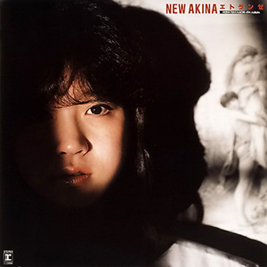

录音室专辑：第4张
发行年份：1983年
发行日期：8月10日
Side 1
| 歌名 | 作词 | 作曲 | 编曲 |
|---|---|---|---|
| さよならね | 来生えつこ | 来生たかお | 萩田光雄 |
| ヴィーナス誕生 | 阿木燿子 | 財津和夫 | 萩田光雄 |
| 少しだけスキャンダル | 翔 | 翔 | 横浜銀蝿・萩田光雄 |
| 感傷紀行 | 谷村新司 | 谷村新司 | 萩田光雄 |
| ルネサンス―優しさで変えて― | 売野雅勇 | 細野晴臣 | 萩田光雄 |
Side 2
| 歌名 | 作词 | 作曲 | 编曲 |
|---|---|---|---|
| モナムール（グラスに半分の黄昏） | 売野雅勇 | 細野晴臣 | 細野晴臣 |
| ストライプ | 来生えつこ | 来生たかお | 萩田光雄 |
| わくらば色の風 | TAKU | TAKU | 横浜銀蝿・萩田光雄 |
| 時にはアンニュイ | 阿木燿子 | 財津和夫 | 萩田光雄 |
| 覚悟の秋 | 谷村新司 | 谷村新司 | 萩田光雄 |
首发规格：黑胶 LP: L-12580，卡带 CT: LKF-8080
唱片公司：Reprise Records，Warner Pioneer
排行榜：Oricon公信榜LP周榜第1位（连续2周），磁带周榜第1位，1983年度专辑榜第10位
获奖：第25回日本唱片大賞 ‘83专辑Best 10
再发行：
1983年9月28日 - CD: 35XL-15
1983年11月30日 - SD: SDM-15010
1985年7月10日 - CD: 32XL-95
1991年6月17日 - CD: WPCL-413
1996年4月25日 - CD: WPC6-8185
2006年6月21日 - CD、数码下载: WPCL-10279
2006年7月5日 - 数码下载
2012年8月22日 - SACD/CD: WPCL-11137
2014年1月29日 - CD: WPCL-11725
2018年5月2日 - LP: WPJL-10086
2022年9月21日 - 2CD：WPCL-13416~7
2022年9月21日 - 2CD+BD: WPZL-32020~2